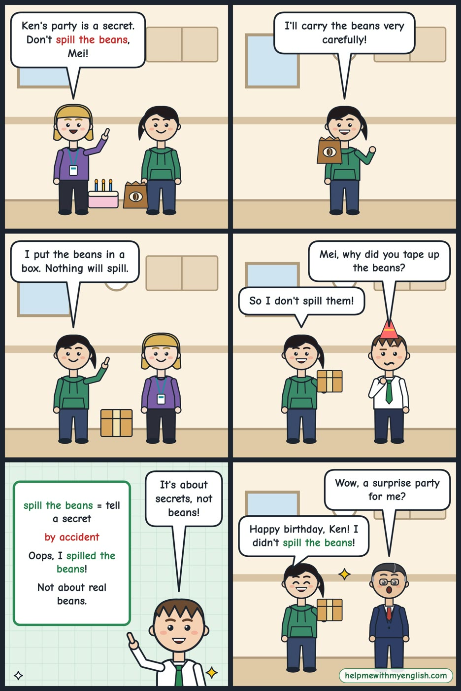

spill the beans
To tell a secret by accident.
Don't spill the beans about the surprise party!
Tip: Use it as a verb phrase about the person who lets the secret out ("She spilled the beans"); it's often used when the leak is accidental, and it's usually followed by "about" plus the secret.
Hear it in conversation
Workbook
1. What does it mean?
In this conversation, what does "spilled the beans" mean?
2. Fill the gap
I didn't mean to , but I told my sister about the job offer before my boss had announced it.
3. Choose the best reply
Kofi: Why does Diego look so nervous around Mei today?
4. Your turn: speak
Have you ever had to keep a secret from a friend or family member? What happened?
Show an example answer
Yes, last year I helped plan a trip for my parents' anniversary. I was so worried I'd spill the beans that I avoided talking to my mum for a week. In the end, it worked, and she was completely surprised.
Answer key: spill the beans
- 1. D. Accidentally told someone a secret
- 2. spill the beans
- 3. A. He's afraid he'll spill the beans about her farewell gift.
- 4. Example: Yes, last year I helped plan a trip for my parents' anniversary. I was so worried I'd spill the beans that I avoided talking to my mum for a week. In the end, it worked, and she was completely surprised.
See it in a comic
